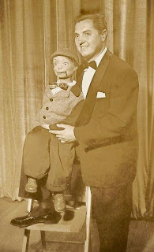

Down memory lane with Rickie Lane
5/12/2010
{kind=link}

From Glen Rappold:
Here is a pic of Rickie Layne using his Willy Talk figure, Velvel. It is the only pic I have ever seen of Rickie using the figure BEFORE the modifications! You will notice the figure still has the original painted eyes and large gap at the mouth. Later, he had a bit added to the cheeks, glass eyes installed, modification to the nose, mouth gap closed and a better paint job.
This is also the model that Bob Evans used for his "Jerry O'Leary.
For a toy, this was actually quite a large figure, the head measuring over 6" from chin to top of head, and almost 4 1/2" wide at the cheeks, and with more almond shaped eyes- perfect for a 38" vent pro figure. Unfortunatley fewer of these were made, and as a result are very scarce today. Many of the orignal larger Maher figures were made from this model, including the orignal Dale and Buster.
This is also the model that Bob Evans used for his "Jerry O'Leary.
For a toy, this was actually quite a large figure, the head measuring over 6" from chin to top of head, and almost 4 1/2" wide at the cheeks, and with more almond shaped eyes- perfect for a 38" vent pro figure. Unfortunatley fewer of these were made, and as a result are very scarce today. Many of the orignal larger Maher figures were made from this model, including the orignal Dale and Buster.
* * * * * *
From Teri Layne: "Rickie was my dad. I remember driving to New York every summer in the 70's so he could perform at Grossinger's and all the clubs. He was such a FUN, good natured guy! Unfortunately, my dad passed away Feb. 11, 2006."